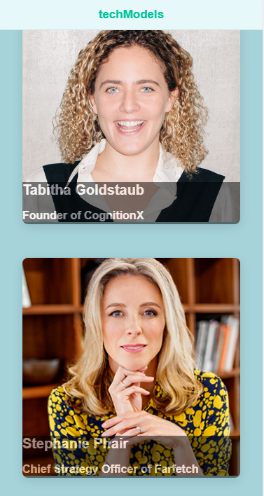
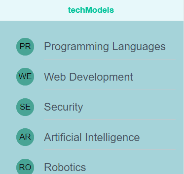
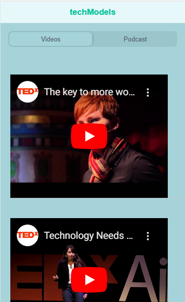

<ion-content fullscreen class="ion-padding" scroll-y="false">
  <ion-slides pager="true" [options]="slideOpts" style="height:100% ; background-color: #A5D3D9" #slides>
  <!--  Welcome Page Slide-->
    <ion-slide style="background-color: #A5D3D9">
      <div class="slide">

        <h1 style="margin-bottom: 85px">techModels</h1>
        <h3>Guiding you towards Technology</h3>
        <ion-button (click)="Next()">Getting Started</ion-button>
      </div>
    </ion-slide>
   <!-- Home Page Slide-->
    <ion-slide style="background-color: #A5D3D9" >
      <div >
      <h2 style="margin-bottom: 65px">techModels</h2>
      <p>Learn About role Models working within the Technology Sector.</p>
      
     <!-- <ion-button>Next</ion-button>-->
      </div>
    </ion-slide>
    <!--Skills Page Slide-->
    <ion-slide style="background-color: #A5D3D9">
      <div>
      <h2 style="margin-bottom: 115px">techModels</h2>
      <p>Find out about the fields in technology and the skills you can develop on.</p>
      
     <!-- <ion-button>Next</ion-button>-->
      </div>
    </ion-slide>
   <!-- Extras Page Slide -->
    <ion-slide style="background-color: #A5D3D9">
      <div>
      <h2 style="margin-bottom: 60px">techModels</h2>
      <p>Watch & Listen to role models working within the technology Sector.</p>
      

      <ion-button fill="clear" (click)="direct()">Finish<ion-icon slot="end" name="arrow-forward"></ion-icon></ion-button>
      </div>
    </ion-slide>

  </ion-slides>
</ion-content>
